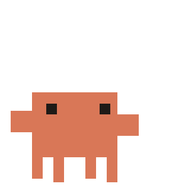
Wanders about
Strolls along the bottom of the screen, pauses, blinks and watches your cursor. Drag it anywhere, or flick it to throw it.
Clawd is a pixel-art friend who lives on your screen, wanders along the bottom, sits on your windows, and shows you what Claude Code is up to, one little thought bubble at a time.
Free and open source · macOS 13 or later · v0.1.0, signed and notarized · all releases
Claude Code companion
Connect Clawd once and every Claude Code session reports to it. A pixel thought bubble shows the current step, with a little animated icon for each kind of work.
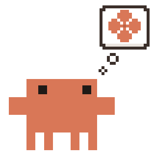
Thinking…
Allow Bash?
npm run build && npm test
my-website · 1 of 2 waiting
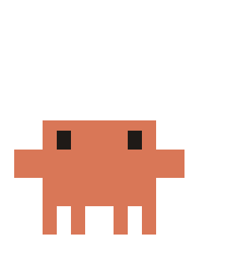
A demo card. Try the buttons; nothing here talks to anything.
Click to approve
When Claude Code asks for permission, Clawd hops up with a card: the tool, the exact command, file or URL, the project, and how many requests are waiting. Claude Code's own prompt still appears too; whichever you answer first wins.
clawd command can say yes on your behalf.Token usage in the menu bar
Clawd sits in your menu bar with today's token count beside it. Click for a panel with the last 14 days, or open the breakdown by project. It reads Claude Code's own logs on your Mac; nothing is uploaded.
TODAY
48,214 tokens
+ 1.9M cache reads
LAST 14 DAYS
Hover a bar
214k tokens across 5 projects
Estimated from Claude Code logs on this Mac · subagent work is included in its project
Life on your Mac
Even when Claude Code is quiet, Clawd keeps busy. Its motion is spring-driven: it squashes when it lands, leans into its walk, swings when you carry it and breathes when idle.

Strolls along the bottom of the screen, pauses, blinks and watches your cursor. Drag it anywhere, or flick it to throw it.
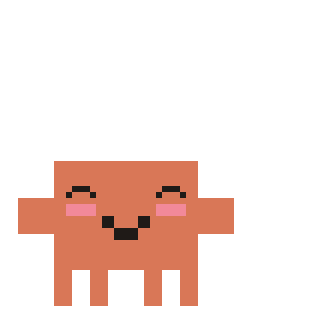
Drop it on a window's top edge, or it jumps up by itself. It rides along when you move the window and hops down when it closes.
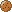
Throw a ball (five kinds, each bounces differently) and Clawd kicks it back toward your cursor. Drop a cookie and it waddles over to eat it in three bites.
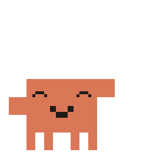
Launch a second Clawd. The two notice each other and wave, and bump into each other when they cross paths.
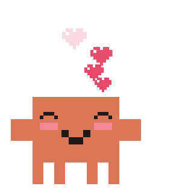
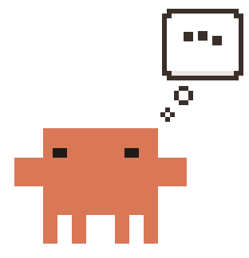
Petting, snacks and friends cheer it up; pokes and rough throws don't. A happy Clawd floats hearts; a sulky one looks away and sighs until you win it back.
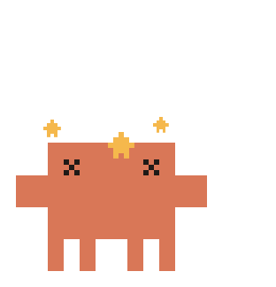
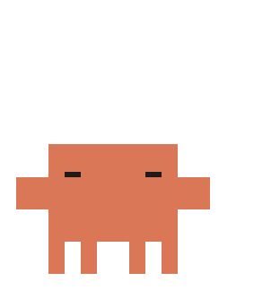
Click its eyes and it squints. Shake it while dragging and it lands dizzy. Hold it up too long and it flails.
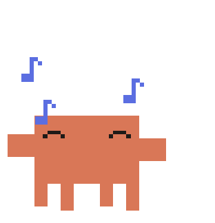
When Music or Spotify is playing, Clawd dances along, and keeps going through the gap between tracks.
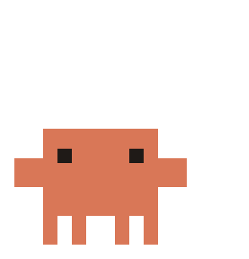
Looks down at the keys while you type fast, dozes after 10 idle minutes, droops on low battery, and holds up a clipboard when you copy (without ever reading it).
Time, seasons and weather
Clawd checks the clock, the calendar and the local forecast, and changes outfit to match. Seasons flip for the southern hemisphere, and it announces the weather in a speech bubble when things change.
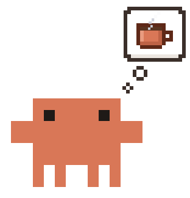
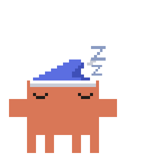
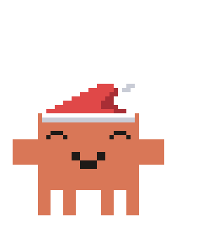
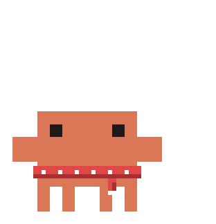
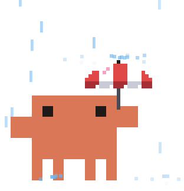
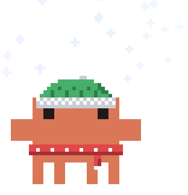
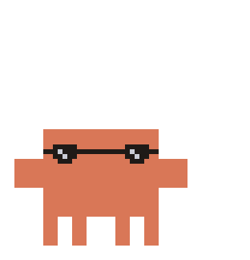
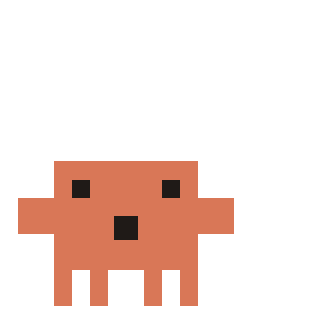
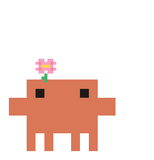
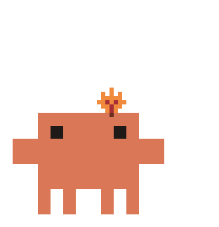
Plus shivering when it's freezing, squinting in fog and startled jumps in thunderstorms. Temperatures show in °F or °C to match your Mac.
Install
Connecting adds Clawd's hooks to your Claude Code settings, keeping everything else and saving a backup next to it. Needs macOS 13 or later, Apple Silicon or Intel.
git clone https://github.com/FB845/clawd.git
cd clawd
./build.sh
open build/Clawd.appOnly needs the Xcode Command Line Tools. No Xcode project, no dependencies.
Privacy
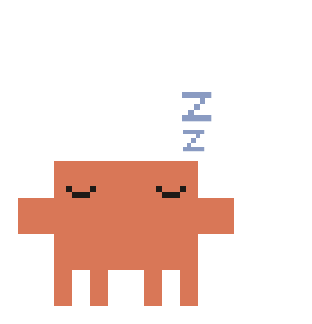